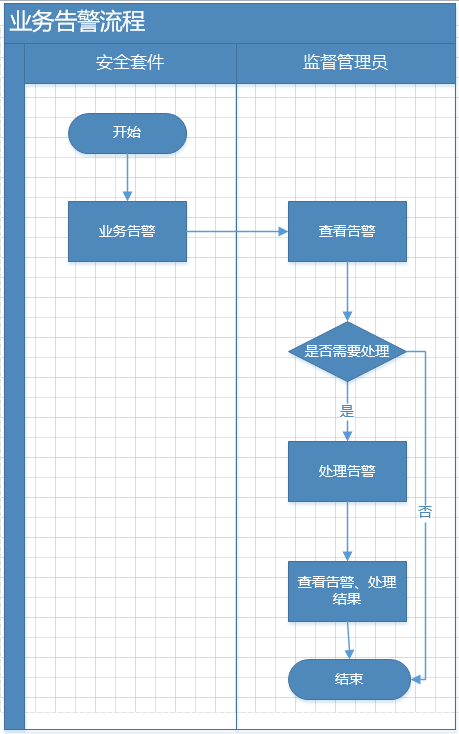

车辆告警业务流程
车辆告警业务流程主要描述由于车辆出入电子围栏、超速、不按线路行驶而产生的业务告警及处理流程。其流程图如
Fig 2
车辆告警业务流程
所示。

Fig 2 车辆告警业务流程
流程主要说明如下：
1.
车辆出入电子围栏、超速、不按线路行驶而产生业务告警。
2.
监督管理员接收告警，查看告警信息、监控车辆信息。请参见
车辆告警
。
3.
监督管理员判断告警需要处理后，填写告警处理信息。请参见
处理告警
。
4.
监督管理员查看历史告警及其处理结果。请参见
查看历史告警信息
。
Parent topic: 操作流程